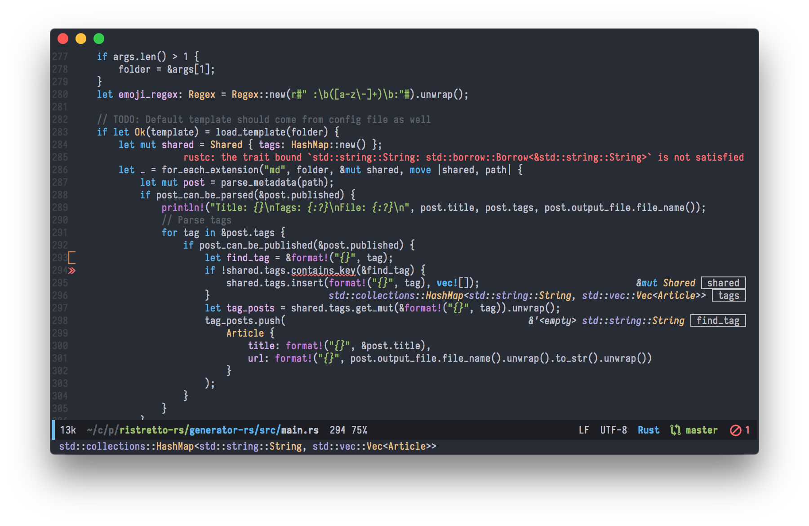

Từ spacemacs đến init.el
Chuyển từ vim sang emacs, sự lựa chọn hàng đầu là spacemacs. Lý do? vì spacemacs có evil-mode, giúp sử dụng keybinding giống vim trên emacs, có khả năng tự động cài đặt những package cần thiết (ví dụ khi mở file *.rs mà chưa cài rust-mode), tự động gỡ bỏ các package không sử dụng, giao diện được config sẵn, và kèm theo hơn 200 packages các kiểu được cài sẵn... nói chung đây là một bản emacs không có gì ngoài magic
Tuy nhiên, magic quá mức vừa là điểm mạnh, vừa là vấn đề hết sức nghiêm trọng của spacemacs. Ngoài việc nó làm cho quá trình khởi động chậm đi rất nhiều (mình đã từng rất bất ngờ khi biết emacs của nhiều người chỉ tốn có 2 giây để khởi động), việc sử dụng khái niệm layer làm giấu đi nhiều thứ mà đáng lẽ ra chính người dùng phải kiểm soát được, và tạo thêm nhiều sự phức tạp không đáng có, ví dụ như không ít lần spacemacs bị crash hoặc tệ hơn là một chức năng nào đó bỗng nhiên dở chứng không hoạt động được nữa, sau khi cài một hoặc một vài packages mới, và dù gỡ nó ra cũng không giúp ích gì được.
Trên kênh support chính của team spacemacs, là github, thì đa phần mọi issue đều được reply một cách chung chung là:
- "Bạn đã thử chạy emacs với lệnh --debug-init chưa?"
- "Bạn post cấu hình file .spacemacs lên xem nào?"
Những câu trả lời như thế này không hề có ích, đơn giản là vì output của --debug-init không thực sự hữu dụng vì spacemacs còn load thêm quá nhiều thứ linh tinh khiến cho việc debug gặp khá là nhiều khó khăn.
Thêm một vấn đề khi sử dụng spacemacs và evil-mode đó là cảm giác sợ bỏ lỡ mất những gì thuộc về emacs truyền thống, tuy nhiên vấn đề này về sau không phải là mối bận tâm của mình nữa.
Nhìn chung, spacemacs là một giải pháp khá thích hợp cho những ai muốn chuyển từ vim sang, nhưng chỉ thích hợp dùng một thời gian. Để có thể tìm hiểu sâu hơn về emacs, thì kiểu gì cũng nên tự tìm cách xây dựng cho mình một file config riêng. Nhiều người cực đoan thậm chí còn nói như này (hơi tục một tí nhé ):
- "Xài spacemacs cũng giống như mặc quần sịp của thằng khác vậy"
Thế nên sau một thời gian thì mình cũng bắt đầu thử nghiệm một vài phiên bản emacs customized khác, như doom-emacs (sau đó thì bợ luôn cái theme doom-one của ông này), centaur-emacs (không thích lắm),... nhưng nhìn chung thì vẫn đi tới quyết định tự cấu hình một file init.el riêng.
Kết quả là giờ mình có một bản emacs mà tự mình có thể kiểm soát mọi thứ bên trong nó, tốc độ startup chỉ 2.8s (kiểm tra bằng M-x emacs-init-time), và quan trọng là cực kì nhanh, mượt. Kèm theo đó là việc viết code Emacs Lisp cũng rất là sướng

Cách cấu hình như nào thì mình sẽ không ghi lại ra bài này, vì đã từng post ở bên blog tiếng Anh rồi, và nó cực kì dễ, ai cũng có thể làm theo
Các bạn cũng có thể tham khảo thêm cấu hình init.el mà mình đang sử dụng, sử dụng use-package để cài đặt và quản lý config, kèm theo các package cơ bản như là evil-mode cho vim keybinding, doom-one theme, helm cho vụ search và fuzzy match, projectile để quản lý project, neotree để hiện cây thư muc, which-key để hiện danh sách các keybinding khi bắt đầu gõ phím tắt, general để customize phím tắt, flycheck để kiểm tra code khi đang gõ, company cho vụ autocomplete,...
Ngoài ra, vì việc cấu hình emacs sử dụng lisp, việc tìm hiểu xem viết code lisp như thế nào mới đúng chuẩn cũng là một việc khá quan trọng :))
Nếu không thích thì có thể comment